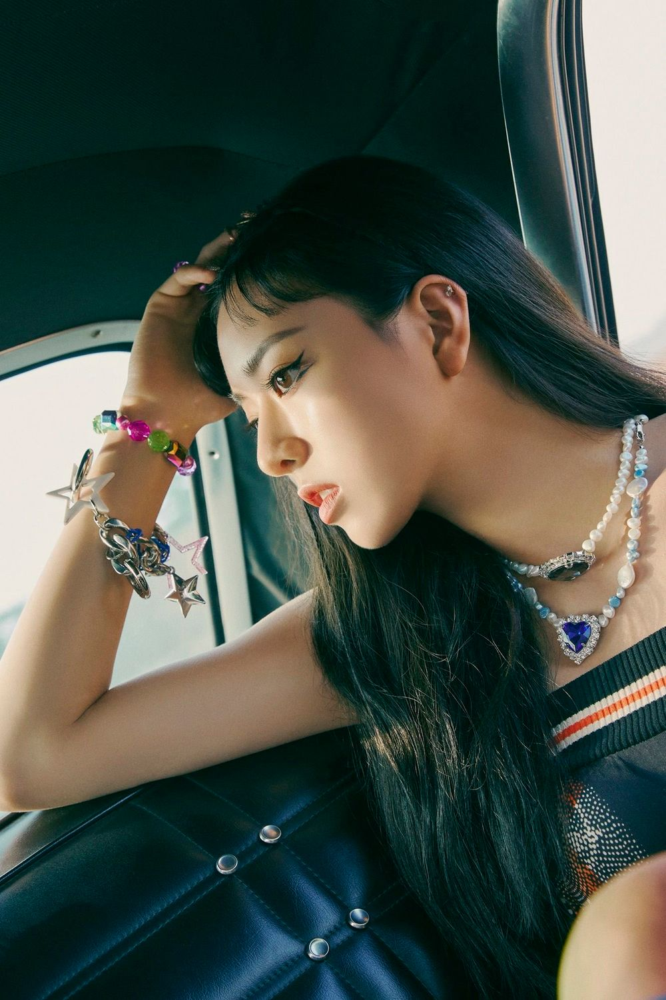

유나

JYP엔터테인먼트 소속 5인조 걸그룹 ITZY의 멤버. 팀에서 막내와 비주얼을 맡고 있다.
막내다운 발랄함과 애교로 언니들의 사랑을 듬뿍 받으면서 ITZY만의 활기차고 당당하며 내 자신을 사랑하는,
틴 크러쉬 이미지를 형성하는데 큰 기여를 하고 있다.
라이브 실력이 안정적이다. 음역대도 넓은 편이고,
밝고 가벼운 음색에 통통 튀는 청량감까지 겸비한 독특한 보컬을 소유하고 있다.
기교적이지는 않지만 매끄럽고 직설적인 창법에 상당히 쫄깃한 딕션이 어우러져
노래를 듣는 사람이 가사와 멜로디에 쉽게 집중하고 즐길 수 있게 만드는 능력이 있다.
이는 메인보컬만으로 편중될 수 있는 그룹 보컬의 잠재적 단점을 균형적으로 보완할 수 있는
아주 중요한 요소를 지니고 있는 셈이다.
두 번째 활동곡인 ICY부터, ITZY만의 음악적 색깔이 잡히기 시작했다는 전문가들의 평과 함께,
ITZY의 컨셉인 틴 크러쉬 이미지의 보컬을 유나가 잘 표현했다는 긍정적 평가들이 올라오고 있다.